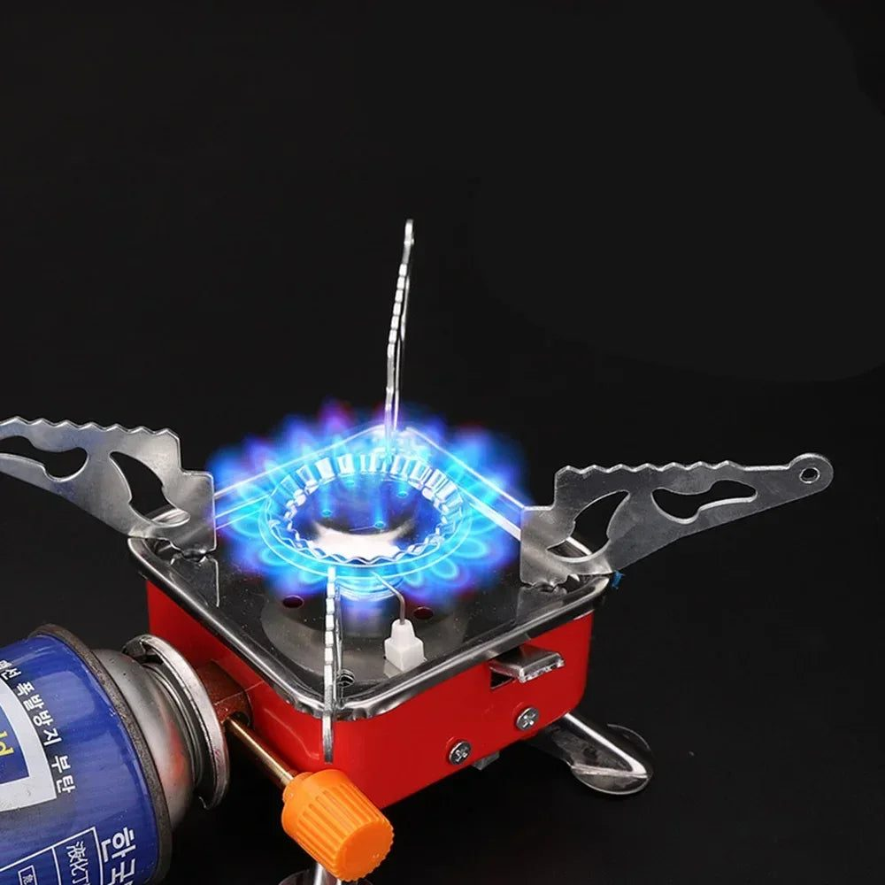
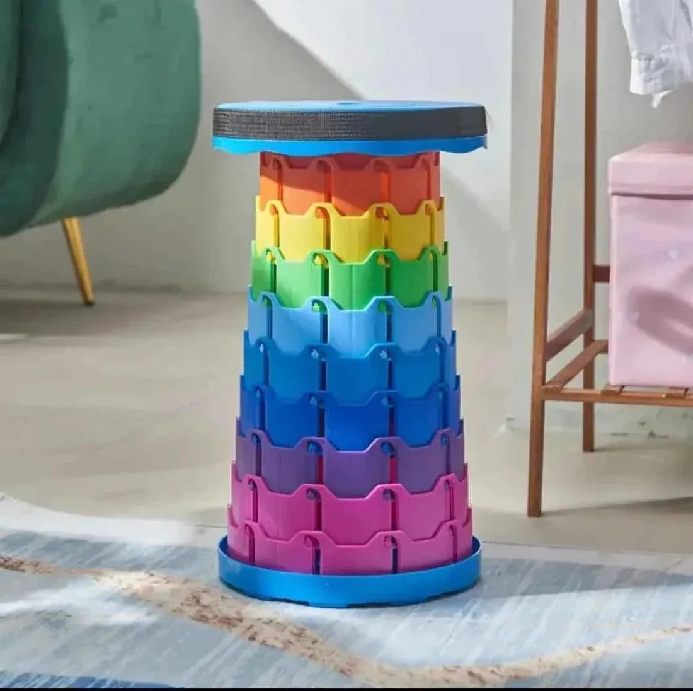

What to pack for a camping trip in Pakistan's mountains: shelter, cooking, light, warmth, food and respect for the places you visit.


Every summer, thousands of families and groups of friends drive north to Naran, Kaghan, Hunza, Skardu and Swat. Many stay in hotels, but more and more people now want to camp beside a lake or under the stars at a meadow. Camping in the mountains is unforgettable, but the weather changes quickly, nights are cold even in July, and shops are far apart once you leave the main towns. A good checklist makes the difference between a magical trip and a miserable one.
Your tent should be waterproof and easy to pitch, because sudden rain is common in the mountains. Practise setting it up at home before you leave. Carry a ground sheet or tarp to keep moisture away from the floor. Sleeping bags rated for cold weather are essential; temperatures near lakes such as Saif ul Malook or at Deosai can drop sharply after sunset. A foam mat under the sleeping bag adds warmth because the ground pulls heat away from your body.
Hot food and chai at a campsite feel like luxury. Pack a compact gas stove with spare canisters, a small pot, a pan, and a kettle. Folding stoves are light and quick, but always use them in the open air and on stable ground, never inside the tent. Bring a lighter and a backup box of matches in a plastic bag. Pre-mixed masalas, instant noodles, rice, daal, eggs, parathas wrapped in foil, dry fruits and biscuits travel well. Carry a few litres of drinking water, plus purification tablets or a filter for streams.
Once the sun goes down in the mountains, it is completely dark. Each person needs a headlamp or torch, and the group needs at least one bright lantern for the cooking area. Rechargeable lanterns with a hook can hang from the tent or a tree branch. Carry a power bank for phones, and keep electronics in a dry bag. Remember that mobile signals disappear in many valleys, so download offline maps before leaving.
After a long day of driving or hiking, sitting on a cold rock is not fun. Folding stools or retractable chairs are light and pack small, and they make meals and evening chats much more comfortable. A small folding table helps when cooking. Pack a light blanket or shawl for sitting outside at night.
Dress in layers rather than one heavy jacket:
Even in summer, sunlight at high altitude is strong, so bring sunglasses, sunscreen and a cap.
Keep a basic first aid kit with bandages, antiseptic, painkillers, motion sickness tablets, ORS sachets and any personal medicines. Altitude can cause headaches; drink plenty of water and do not push too hard on the first day. Check the weather and road conditions before you set out, especially around the Babusar Pass and the Karakoram Highway after rain. Tell someone at home your route and expected return date.
Pakistan's northern areas are suffering from litter left by tourists. Carry rubbish bags and bring all your waste back to a proper bin in town. Do not wash dishes with soap directly in lakes or streams. Respect local people, their land and their privacy; ask before camping near villages or on private pastures.
Carry your CNIC and copies of vehicle documents, because there are several check posts on the way north. ATMs are scarce in remote valleys and often out of cash during the peak season, so keep enough money for fuel, food and emergencies.
Lay everything out the night before and check it against your list. Pack heavy items low in the car, and keep a bag with snacks, water, jackets and the first aid kit within reach. For stoves, lanterns and folding stools, you can look at camping and outdoor gear at Trenducts, and the rest of the home and travel range is on trenducts.pk. With the right kit, the mountains will look after you as well.